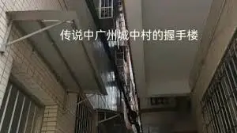

01. 實地觀察 (OBSERVATION)
請分析下方的影像資料。這種高密度的建築形態，在視覺上有什麼特徵？

⚠️ 圖片載入失敗
請確認資料夾內是否有 village.webp 檔案
思考引導：留意樓宇之間的距離（Distance）與光線（Light）。
02. 概念形成 (CONCEPT)
為什麼現代化城市中會殘留這些「農村」？請選擇最合理的成因假設：
✅ 正確：二元結構 (Dual Structure)
這就是所謂的「城市包圍農村」。雖然地理位置在市中心，但土地權屬仍保留集體所有制，導致規劃管理與城市脫節。
03. 角色視角剖析 (ANALYSIS)
城中村是「毒瘤」還是「跳板」？這取決於你是誰。
請點擊下方角色卡片以獲取考察數據：
04. 評價與決策 (EVALUATION)
面對城中村問題，作為決策者，你傾向哪種方案？
📝 最終反思：
請回應上述挑戰，你會如何平衡「經濟發展」與「社會公義」？